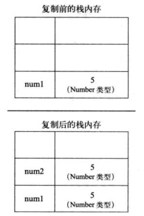
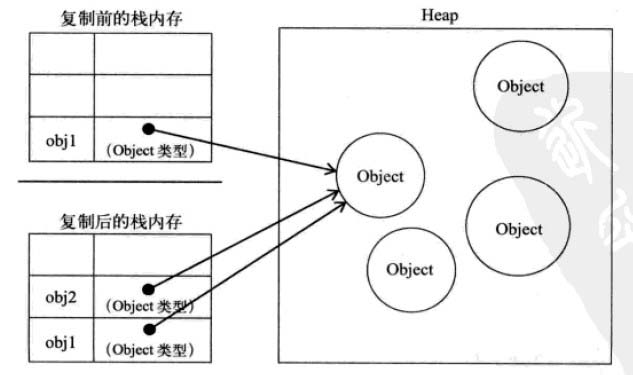
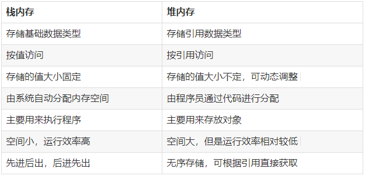

分享人：沈沪生
目录
1.背景介绍
2.知识剖析
3.常见问题
4.解决方案
5.编码实战
6.扩展思考
7.参考文献
8.更多讨论
ECMA-262是一种由Ecma国际设计的标准化的脚本程序设计语言标准。javascript和jscript是ECMA-262 标准的实现和扩展。
js还是一门弱类型语言，他和强类型有什么分别？强类型是强制数据类型定义的语言。也就是说，一旦一个变量被指定了某个数据类型，如果不经过强制转换，那么它就永远是这个数据类型了。 弱类型定义语言，数据类型可以被忽略的语言。它与强类型定义语言相反, 一个变量可以赋不同数据类型的值。 强类型定义语言在速度上可能略逊色于弱类型定义语言，但是强类型定义语言带来的严谨性能够有效的避免许多错误。
js 变量有两种不同的数据类型：基本类型，引用类型。也有其他的叫法，比如原始类型和对象类型，拥有方法的类型和不能拥有方法的类型， 还可以分为可变类型和不可变类型，其实这些叫法都是依据这两种的类型特点来命名的，大家爱叫啥就叫啥吧 。
基本类型分为：undefined，boolean，number，string，null.基本类型的访问是按值访问的，你可以操作保存在变量中的实际的值。
javascript中除了基本类型之外就是引用类型了，也可以说是就是对象了。Object、Array、RegExp、Date、Function，对象是属性和方法的集合。 也就是说引用类型可以拥有属性和方法，属性又可以包含基本类型和引用类型。
number
这种类型用来表示整数和浮点数值，还有一种特殊的数值，即NaN。这个数值用于表示一个本来要返回数值的操作数未返回数值的情况（这样就不会抛出错误了）。例如，在其他编程语言中，任何数值除以0都会导致错误，从而停止代码执行。 但在JavaScript中，任何数值除以0会返回NaN，因此不会影响其他代码的执行。
还有个isNaN()函数，用于检查其参数是否是非数字值。 如果参数值为 NaN 或字符串、对象、undefined等非数字值则返回 true, 否则返回 false。
String
String类型用于表示由零或多个16位Unicode字符组成的字符序列，即字符串。字符串可以由单引号(')或双引号(")表示，但是不可混用。
Boolean
该类型只有两个字面值：true和false。这两个值与数字值不是一回事，因此true不一定等于1，而false也不一定等于0。虽然Boolean类型的字面值只有两个，但JavaScript中所有类型的值都有与这两个Boolean值等价的值。要将一个值转换为其对应的Boolean值，可以调用类型转换函数Boolean()，
undefine
Undefined类型只有一个值，即特殊的undefined。在使用var声明变量但未对其加以初始化时，这个变量的值就是undefined。不过，一般建议尽量给变量初始化，但是在早期的js版本中是没有规定undefined这个值的，所以在有些框架中为了兼容旧版浏览器，会给window对象添加undefined值。
null
Null类型是第二个只有一个值的数据类型，这个特殊的值是null,主动释放一个变量引用的对象，表示一个变量不再指向任何对象地址。从逻辑角度来看，null值表示一个空对象指针，而这也正是使用typeof操作符检测null时会返回object的原因。
何时使用null?
当使用完一个比较大的对象时，需要对其进行释放内存时，设置为 null。
常见的引用类型
Object类型:带有属性和方法的特殊数据类型。 Array:是使用单独的变量名来存储一系列的值。 Function:函数类型在JavaScript中也是对象。
var emptyObj1 = {};
var emptyObj2 = new Object();
var emptyObj2 = Object.create(Object.prototype);
var emptyArr1 = [];
var emptyArr2 = new Array();
引用类型与基本类型的区别
1、引用类型值可添加属性和方法，而基本类型值则不可以。
var p = new Object();
p.age=11;
alert(p.age);//11
var name = 'a';
name.age = 11;
alert(name.age); //undefined
2、存储的数据区不同
基本类型的数据就存在栈内存中，它们可以直接访问，是按照值进行分配的，可以直接操作栈内存空间的值
var a = 1
b = a
console.log(a) // 1
console.log(b) // 1
b = 2 // 改变b的值对a没有影响
console.log(a) // 1
console.log(b) // 2
引用类型的值是按引用访问的，它的值保存在堆内存中，栈内存中保存的是它的地址，该地址与堆内存中的值相关联
var a = {name:"tarzan"};
var b;
b = a;
a.name = "aaa";
console.log(b.name); // aaa
b.age = 22;
console.log(a.age); // 22
var c = {
name: "aaa",
age: 22
}
基本类型变量的复制：从一个变量向一个变量复制时，会在栈中创建一个新值，然后把值复制到为新变量分配的位置上；

引用类型变量的复制：复制的是存储在栈中的指针，将指针复制到栈中为新变量分配的空间中，而这个指针副本和原指针指向存储在堆中的同一个对象； 复制操作结束后，两个变量实际上将引用同一个对象；因此改变其中的一个，将影响另一个；

可以使用 typeof 操作符来检测变量的数据类型。 typeof是一个运算符，有2种使用方式：typeof(表达式)和typeof 变量名，第一种是对表达式做运算，第二种是对变量做运算。
typeof "John" // 返回 string
typeof 3.14 // 返回 number
typeof false // 返回 boolean
typeof [1,2,3,4] // 返回 object
typeof {name:'John', age:34} // 返回 object
typeof 可判断基本的数据类型，但无法判断引用类型（除了function类），也就是继承自object类型的具体类型，比如Array、Date、自定义类等。
instanceof操作符判断数据类型
instanceof运算符用来判断一个构造函数的prototype属性所指向的对象是否存在另外一个要检测对象的原型链上
obj instanceof Object;//true 实例obj在不在Object构造函数中
如果A是B的实例，则返回true,否则返回false。 在这里需要特别注意的是：instanceof检测的是原型.
instanceof (A,B) = {
var L = A.__proto__;
var R = B.prototype;
if(L === R) {
//A的内部属性__proto__指向B的原型对象
return true;
}
return false;
}
Object.prototype.toString.call()精确判断数据类型
可以用来精确判断数据类型，包括Boolean、Number、String、Function、Array、Date、RegExp、Object、Error等类型。返回类似’[object type]‘的字符串， type指前面提到过的Boolean、String等类型。
缺点：无法检测开发人员自定义的构造函数创建的实例类型。
function Person(name){
this.name = name;
}
var p1 = new Person('san');
Object.prototype.toString.call(p1) //'[object Object]'
数值转换
浅析栈区和堆区内存分配的区别
堆heap与栈stack基本是所有的程序语言中都带有的，它将数据分配到内存空间来完成各种调用。（当然了，内存里除了heap和stack还有常量池。）
和java中对内存的处理类似，栈内存主要用于存储各种基本类型的变量，包括Boolean、Number、String、Undefined、Null，**以及对象变量的指针，这时候栈内存给人的感觉就像一个线性排列的空间，每个小单元大小基本相等。 而堆内存主要负责像对象Object这种变量类型的存储。栈内存中的变量一般都是已知大小或者有范围上限的，算作一种简单存储。而堆内存存储的对象类型数据对于大小这方面，一般都是未知的。所以null作为一个object类型的变量却存储在栈内存中应该有这部分原因。

垃圾回收站
它是专门释放对象内存的一个程序。 （1）在底层，后台伴随当前程序同时运行；引擎会定时自动调用垃圾回收期； （2）总有一个对象不再被任何变量引用时，才释放。
一般来说栈内存线性有序存储，容量小，系统分配效率高。而堆内存首先要在堆内存新分配存储区域，之后又要把指针存储到栈内存中，效率相对就要低一些了。 垃圾回收方面，栈内存变量基本上用完就回收了，而推内存中的变量因为存在很多不确定的引用，只有当所有调用的变量全部销毁之后才能回收。
https://www.jianshu.com/p/8107d25f54ac
https://www.cnblogs.com/heioray/p/9487093.html
https://www.jb51.net/article/106826.htm